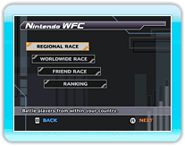
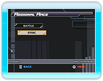
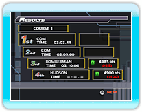
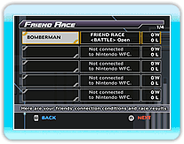
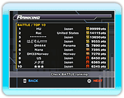

16 |
Nintendo Wi-Fi Connection Mode |
 |
|
Select "Nintendo WFC" from the Main Menu.
When you have successfully been connected, the Nintendo WFC Mode Selection screen will be displayed. Select the Nintendo WFC mode you'd like to play in, and press
● REGIONAL RACE
● WORLDWIDE RACE
● FRIEND RACE
● RANKING
There are two modes to choose from. Select the mode you want to participate in, then press

● BATTLE
● STOIC

Select a character and equipment, then choose a course to start racing.
The course will be selected randomly from among those chosen by all members. When a race ends, your rating will go up or down depending on what place you finish in.
● FRIEND ROOM 
● Join a Friend
If the race was with friends, your race results with each friend will then be updated.
● Register a Friend
Your ranking is determined by sending and receiving Rating Points in BATTLE and STOIC modes, or race times in TIME ATTACK mode.
When selecting the rank type you want to see, you will be shown the top 10 ranks for any category. You can also check how well you and your friends rank in. Ranking will be updated automatically when selecting a rank type.
*
|
 |
 |
 |